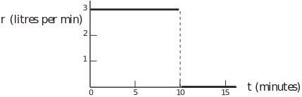

2 Constant functions
There are two physical interpretations of constancy that are of interest here. A very common form is constancy with time . Motion under gravity may be modelled as motion with constant acceleration. By definition, Fixed Rate Mortgages (increasingly popular in the late 1990s) offer a constant rate of interest over a specified period. In these examples, the constancy will be limited to a certain time interval. Motion under gravity will only involve the constant acceleration due to the Earth’s gravitational pull as long as the motion is close to the Earth’s surface. In any case the acceleration will only be from the time the object is released to the time it stops. Unfortunately, increases in base interest rates eventually feed into mortgage rates. So mortgage lenders are only able to offer fixed rates for a certain time. A mathematical statement of these limits is a statement of the range of validity of the constant function model.
Another type of constancy is constancy in space . Long stretches of Roman roads were built in a fixed direction. For at least part of their lengths, roads have constant width. In modelling the formation and movement of seismic waves in the Earth’s crust it is convenient to assume that the layers from which the Earth’s crust is formed have constant thickness with respect to the Earth’s surface. In these cases the assumption of constancy will only be valid within certain limits in space.
Example 1
The rate of flow of water from a tap is denoted as (litres per minute). The time for which it is turned on is denoted by (minutes). Suppose that a tap is turned on and that the rate of water running out of a tap is assumed to be constant at 3 litres per minute and that it is turned off after 10 minutes.
- Write down a mathematical statement of the model for the flow from the tap, including its range of validity.
- Sketch a graph of the variation of r with t .
- Find an equation for the number of litres of water that have run out of the tap after t minutes.
- Calculate the volume of water that has run out of the tap three minutes before it is turned off.
Solution
- r = 3
-
Figure 1 :

- The tap will have run for seven minutes; 3 litres per minute x 7 minutes = 21 litres
Note that a more sophisticated model would allow for the variation in flow rate as the tap is turned on and turned off.